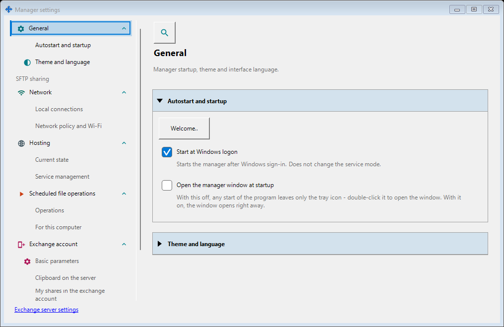
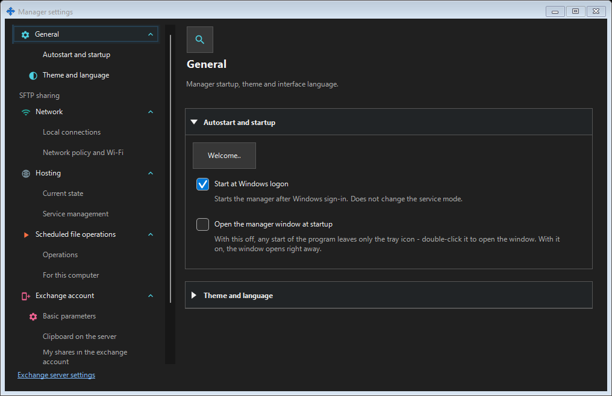
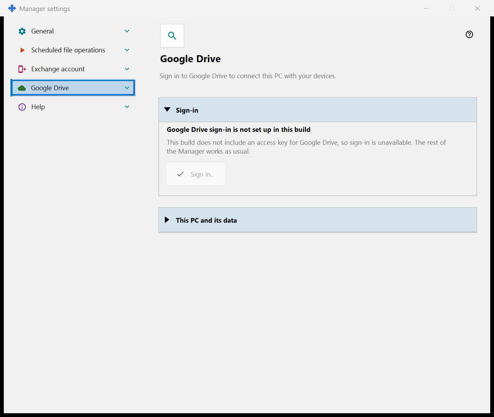
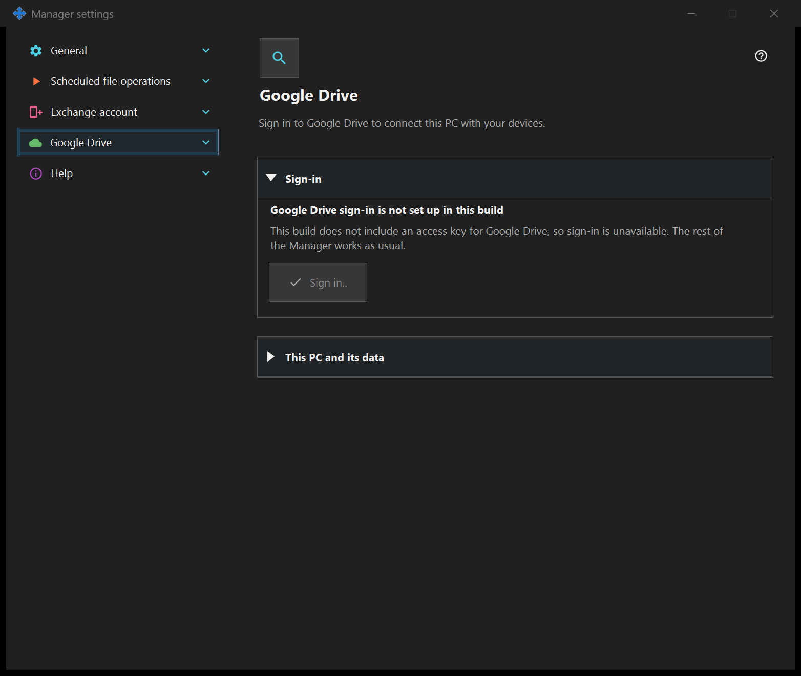

Manager settings
Manager settings
What this is for
Set manager startup, theme and language here. Your remote exchange account, publishing, clipboard and scheduled file operations belong to the manager and do not require a locally installed exchange server or enabled SFTP sharing. When the SFTP sharing component is installed, its pages form a group in this window.


In this order
Open Manager settings from the manager or tray. Choose a page, expand a group, or use Search settings. Use the link to open the local exchange server settings beside this window. Closing one window keeps the other window, schedules and servers running.
The elements
Manager settings
Set manager startup, theme and language here. Your remote exchange account, publishing, clipboard and scheduled file operations belong to the manager and do not require a locally installed exchange server or enabled SFTP sharing. When the SFTP sharing component is installed, its pages form a group in this window. Open Manager settings from the manager or tray. Choose a page, expand a group, or use Search settings. Use the link to open the local exchange server settings beside this window. Closing one window keeps the other window, schedules and servers running.
Manager settings
Set manager startup, theme and language here. Your remote exchange account, publishing, clipboard and scheduled file operations belong to the manager and do not require a locally installed exchange server or enabled SFTP sharing. When the SFTP sharing component is installed, its pages form a group in this window. Open Manager settings from the manager or tray. Choose a page, expand a group, or use Search settings. Use the link to open the local exchange server settings beside this window. Closing one window keeps the other window, schedules and servers running.
Google Drive
Signs this PC in to your own Google account so that the application can use its private hidden folder on your Google Drive. Press «Sign in..»: your default browser opens, you approve the access at Google, and Google returns the answer to this PC on a local address; then you can close the browser tab. The only permission requested is access to the application's own hidden folder on your Google Drive (scope drive.appdata): the application cannot see any other file on your Google Drive and receives no e-mail address and no profile data. If Google grants a different access than requested, the sign-in is rejected. The bold line shows the state. «Not signed in to Google Drive»: «Sign in..» is available; if access was revoked or has expired, the line below says so and asks you to sign in again. «Waiting for sign-in in the browser..»: finish the sign-in in the browser or press «Cancel». «Signed in to Google Drive»: this PC is connected to your Google Drive, and its name and short identifier are shown. «Google Drive is unavailable right now»: the line below gives the reason - no connection, the daily upload limit reached, no free space on your Google Drive, or an error from Google; with no connection or an error the application retries on its own. «Signing out of Google Drive..» is shown while a sign-out runs. «Sign out on this device» asks one question, and the default answer is No. After Yes it revokes the access at Google, deletes this PC's records from the hidden folder on your Google Drive and deletes the sign-in token stored on this PC; a line under the buttons gives the number of records deleted, or says that Google did not confirm the revocation, which you can then do in your Google Account settings. In a build without a Google access key the page shows «Google Drive sign-in is not set up in this build», «Sign in..» is disabled and the rest of the Manager works as usual.


Manager settings
Set manager startup, theme and language here. Your remote exchange account, publishing, clipboard and scheduled file operations belong to the manager and do not require a locally installed exchange server or enabled SFTP sharing. When the SFTP sharing component is installed, its pages form a group in this window. Open Manager settings from the manager or tray. Choose a page, expand a group, or use Search settings. Use the link to open the local exchange server settings beside this window. Closing one window keeps the other window, schedules and servers running.
Manager settings
Set manager startup, theme and language here. Your remote exchange account, publishing, clipboard and scheduled file operations belong to the manager and do not require a locally installed exchange server or enabled SFTP sharing. When the SFTP sharing component is installed, its pages form a group in this window. Open Manager settings from the manager or tray. Choose a page, expand a group, or use Search settings. Use the link to open the local exchange server settings beside this window. Closing one window keeps the other window, schedules and servers running.
Manager settings · SFTP sharing settings · Exchange server settings